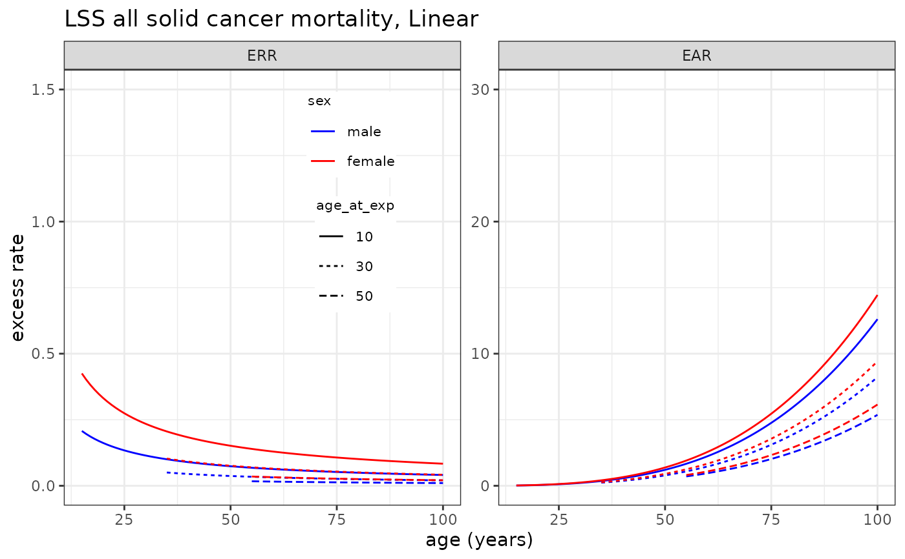

LSS mortality risk models
LSS_mortality.RdLSS mortality risk models for 9 cancer types.
Format
A list object of :
allsolida list object which contains risk model information (see Details)
esophagusa list object which contains risk model information (see Details)
stomacha list object which contains risk model information (see Details)
colona list object which contains risk model information (see Details)
livera list object which contains risk model information (see Details)
lunga list object which contains risk model information (see Details)
bladdera list object which contains risk model information (see Details)
breasta list object which contains risk model information (see Details)
leukaemiaa list object which contains risk model information (see Details)
Details
The list object for each risk model contains the 9 site-specific cancer mortality risk models derived from Life Span Study (allsolid, esophagus, stomach, colon, liver, lung, bladder, breast, leukaemia`).
Each site-specific data.frame contains information for the risk model (a vector of parameter estimates para, a matrix of variance-covariance matrix of parameter estimates var and a function to calculate the risk f).
References
Ozasa, K., Y. Shimizu, A. Suyama et al. Studies of the mortality of atomic bomb survivors, Report 14, 1950-2003: an overview of cancer and noncancer diseases. Radiat Res 177(3): 229-243 (2012).
See also
LSS_incidence, plot_riskmodel()
Examples
names(LSS_mortality) # Sites for which LSS mortality risk models are available
#> [1] "allsolid" "esophagus" "stomach" "colon" "liver" "lung"
#> [7] "bladder" "breast" "leukaemia"
names(LSS_mortality$allsolid) # Available dose response models
#> [1] "L" "LQ"
LSS_mortality$allsolid$L$err # Linear ERR model for all solid cancer motality
#> $para
#> [1] -0.861334 -0.346062 -0.857491 0.344098
#>
#> $var
#> colon10 ew30 lage70 msex
#> 1 0.014180600 0.00333207 0.01639360 -0.000677273
#> 2 0.003332070 0.00662021 -0.01588550 -0.001016880
#> 3 0.016393600 -0.01588550 0.17911000 0.003545970
#> 4 -0.000677273 -0.00101688 0.00354597 0.007714090
#>
#> $f
#> function (beta, data, lag=5) {
#> exp(beta[1])*data$dose * exp(beta[2] * (data$agex - 30)/10 + beta[3] * log(data$age/70)) *
#> (1 + c(-1, 1)[data$sex] * beta[4]) * (data$age - data$agex >= lag )
#> }
#> <bytecode: 0x55744a0883e0>
#> <environment: 0x55744a085420>
#>
LSS_mortality$allsolid$L$ear # Linear EAR model for all solid cancer motality
#> $para
#> [1] -5.9371100 -0.2134750 3.3845100 0.0676994
#>
#> $var
#> colon10 ew30 lage70 msex
#> 32 0.01417250 0.00242883 0.01582030 -0.00474069
#> 33 0.00242883 0.00512198 -0.01226210 -0.00002250
#> 34 0.01582030 -0.01226210 0.13388100 -0.00584042
#> 35 -0.00474069 -0.00002250 -0.00584042 0.00931054
#>
#> $f
#> function (beta, data, lag=5) {
#> exp(beta[1])*data$dose * exp(beta[2] * (data$agex - 30)/10 + beta[3] * log(data$age/70)) *
#> (1 + c(-1, 1)[data$sex] * beta[4]) * (data$age - data$agex >= lag )
#> }
#> <bytecode: 0x55744a08c728>
#> <environment: 0x55744a085420>
#>
LSS_mortality$leukaemia$LQ$err # Linear-quadratic ERR model for leukaemia motality
#> $para
#> bm_dose bm_dosesq lage55
#> 1.379118 1.328138 -1.634167
#>
#> $var
#> bm_dose bm_dosesq lage55
#> bm_dose 0.511572695 -0.16656731 -0.005417054
#> bm_dosesq -0.166567310 0.15938148 0.031442880
#> lage55 -0.005417054 0.03144288 0.146357021
#>
#> $f
#> function( beta, data, lag=2 ){
#> tsx <- data$age-data$agex
#> ( beta[1]*data$dose + beta[2]*data$dose^2) *
#> exp( beta[3]*log(data$age/55) ) * (data$age - data$agex >= lag )
#> }
#>
LSS_mortality$lung$L$err # Linear EAR model for lung cancer motality
#> $para
#> [1] -0.3123940 -0.0674953 0.1087770 0.4832490
#>
#> $var
#> colon10 ew30 lage70 msex
#> 21 0.032047300 -0.000480852 -0.006232080 0.002104700
#> 22 -0.000480852 0.024757400 -0.100574000 -0.000947684
#> 23 -0.006232080 -0.100574000 1.553010000 -0.000694346
#> 24 0.002104700 -0.000947684 -0.000694346 0.022580600
#>
#> $f
#> function (beta, data, lag=5) {
#> exp(beta[1])*data$dose * exp(beta[2] * (data$agex - 30)/10 + beta[3] * log(data$age/70)) *
#> (1 + c(-1, 1)[data$sex] * beta[4]) * (data$age - data$agex >= lag )
#> }
#> <bytecode: 0x55744a0bf410>
#> <environment: 0x55744a0bc370>
#>
# Plotting LSS all solid cancer mortality risk model
plot_riskmodel( rm=LSS_mortality$allsolid$L, title="LSS all solid cancer mortality, Linear", leg_pos=c(0.4, 0.95) )

# Plotting LSS Leukaemia incidence risk model
plot_riskmodel( rm=LSS_incidence$leukaemia$LQ, title="LSS leukaemia incidence", ymax=c(1.5, .3), add=c(0.01,0) )
#> Warning: Removed 6 rows containing missing values or values outside the scale range
#> (`geom_line()`).